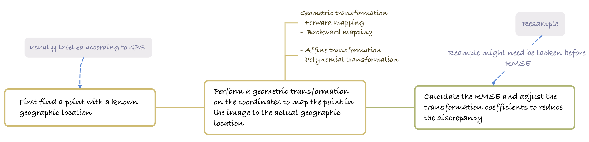

Week 03 Remote sensing data
1. Summary
1.1. Corrections
1.1.1. Geometric
Definition
When remote sensing data are collected, the sensor is not pointing directly down to the ground; elevation changes due to the undulations of the terrain; changes in the trajectory of the vehicle due to winds; and the relative motion of the satellite with respect to the earth can all lead to image distortion. Correction for such images is geometric correction.
Solution

In accurate matching of remote sensing images, more complex nonlinear transformation models may be chosen.
Much like the GIS application of overlaying old maps into modern GIS. Geo-matching process to ensure accuracy and spatial consistency of maps.
1.1.2. Atmospheric
Definition
Atmospheric scattering and topographic attenuation both cause environmental attenuation; in addition, particles and gases in the atmosphere absorb and scatter light, which can create haze that reduces contrast and sharpness in an image. Radiation produces an “adjacency effect” that causes pixels in an image to be affected by surrounding pixels, which affects sharpness. The correction for this type of image is Atmospheric correction.
Regarding the question on page P26 unnecessary: Why is atmospheric correction not necessary for all such images?
Answer: Actually it depends largely on the data and the purpose. If it is just some simple classification task, and highly accurate spectral information is not needed, then there is no need to do Atmospheric correction. Or there is no way to do atmospheric correction when time and resources are limited. Or maybe some data have already been atmospherically corrected, for example, both USGS Landsat and ESA Sentinel mention on their official websites that they use atmospheric correction to process the data.
Solution
There are 6 methods of atmospheric correction provided in the lecture, and the compiled notes are as follows. My preference is the fifth one because most of the functions or functions can be implemented directly by calling them. With the development of python, the Py6S library makes it easier to use atmospheric radiative transfer models including MODTRAN 4+ and Second Simulation of the Satellite Signal in the Solar Spectrum. The sixth is the most interesting to me, and appears to allow measurements to be made with a handheld device, and then linear relationships to be established to correct the remotely sensed data.
It is worth noting, however, that when comparing data before and after calibration, it is necessary to ensure that the scales are consistent (e.g., P29).
1.1.3. Topographic (Orthorectification)
Definition
Orthorectification correction is a subset of geometric correction, where the image is distorted because the sensor is not pointing directly below the ground. The correction to remove the distortion in the image is Orthorectification correction.
Solution
Sensor geometry information including sensor position, attitude and viewing angle is required to determine the actual position of the pixel on the ground. The terrain variations are then taken into account in conjunction with the Digital Elevation Model (DEM) to correct image distortions.
In searching for the Digital Elevation Model, I found that Orthorectification correction is only one direction of its application. At its core, it still contains information on topographic relief, slope and aspect, which can be used not only for remote sensing data correction, but also for modelling water flow paths, flood risk areas and hydrological processes. Its applications are covered in the next “2. Application” section.
1.1.4. Radiometric
Definition
The radiance of image data can be inconsistent across time, location, and sensor, Radiometric Calibration calibrates the response of a sensor by converting the digital number count (DN) of an image into a physically meaningful radiance or emissivity value.
Solution
Bias is a constant that represents the zero offset of the sensor. It is used to adjust the output of the sensor to ensure that the zero drift of the sensor is taken into account in the radiance calculation.
Gain is a scaling factor that is used to convert a digital number (DN) to an actual radiance value. It represents the increase in radiance corresponding to each digital count value (DN) to convert to true radiance.
1.2. Image Joining
In data joining for remote sensing, Mosaicking and Feathering are more like an assembly line. First, Mosaicking stitches multiple remote sensing images together to form a continuous, seamless whole. Then Feathering creates smooth transitions in the overlapping areas.
Feathering works by reducing the impact of one image while increasing the impact of another at the boundaries, which may be achieved by weighted averaging of pixel values, modifying the transparency or opacity of the alpha channel, or gradient blending techniques.
1.3. Image Enhancement
The class briefly went over 7 methods of image enhancement, each with different scenarios of application. Just like photo retouching, different parameters (contrast, sharpening, texture) focus on different parts. The best ones for me to understand are Contrast Enhancement, Band Ratioing, Edge Enhancement, and Texture, because their purpose is clear: to enhance the details in an image or to highlight certain parts of a feature (Maybe because of the extensive photo retouching, it is easier to understand how the methods for highlighting image features work hahahahahahahahaha). The most difficult one is PCA, which I once remembered from my undergraduate algorithms class, and I will try my best to cover its different applications in the “Application” section.